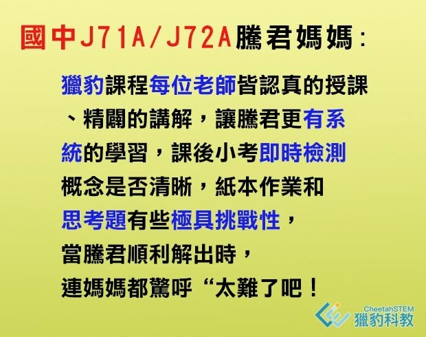

〔J71A/J72A 王騰君學習心得分享〕
騰君從去年初五年級就參與獵豹小學8系列(目前改制為PK)，六年級繼續超修國中J71A/J72A課程，雖是超修生，但對於老師給的思考難題，仍勇於挑戰，就像宗翰老師說的，讓孩子的大腦在學習區學習，一門讓孩子不輕鬆的課，才能帶來真正的幫助，也讓孩子領略學習的快樂和滿足！
騰君自小對數學有濃厚的興趣，參加過許多的競賽，幼稚園大班以滿分取得國內WMI第一名；一年級時跳考海峽兩岸邀請賽台灣初賽，榮獲第一名金牌獎；四年級2019 WMI日本總決賽比賽，來自世界各地20個國家的選手齊聚，騰君榮獲最高獎項鑽石獎。
隨著年級越高，媽媽希望有更專業的老師能帶領君君思考，謝謝熱心的星媽與獵豹團隊成立網課，故在獵豹成立網課時，就加入了J71A、J72A課程，獵豹課程每位老師皆認真的授課、精闢的講解，讓騰君更有系統的學習，課後小考即時檢測概念是否清晰，紙本作業和思考題有些極具挑戰性，當騰君順利解出時，連媽媽都驚呼“太難了吧！
聽了宗翰對孩子們參與數學競賽的建議與提醒，也讓我們對孩子未來的學習方向有了更多、更深的領悟與思索。
真心感謝獵豹團隊提供網課學習，一步步引領孩子思考邏輯更加清晰，期待在老師們的教導下，騰君能像耀星與那些榜單上的學長姐們一樣優秀！
